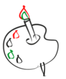

За рулем сижу довольный - ездить просто и легко
Только руль чуть чуть огрионый
и педали далекого
Мне купили паравозик
Сразу два вагона возик
Я включаего и
За собой везет вагон
Вот бы мне в нем прокатиться
Только жаль не поместится

Нарисую я в альбоме
Голубое море
Белый парус над волною
Бъется на просторе